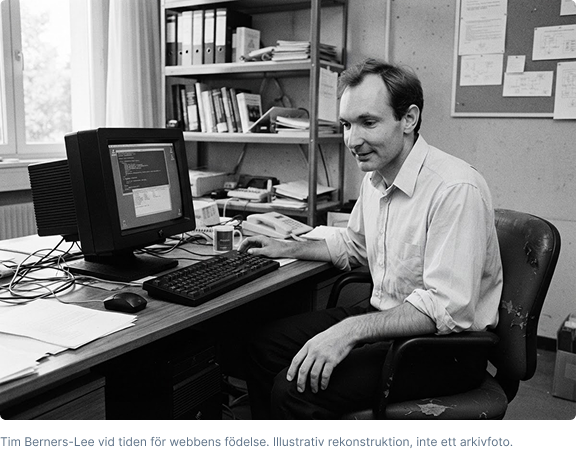

Länkar förbinder idéer
En webbadress gör kunskap möjlig att hänvisa till och dela mellan människor och platser.
FÖRDJUPNING 02
Internet byggdes av många. Men en persons idé förändrade hur vi hittar och delar information på nätet. Möt mannen bakom World Wide Web.
6 min läsning · Människor
FORSKAREN SOM LÄNKADE IHOP KUNSKAP
År 1989 arbetade den brittiske datavetaren på CERN i Schweiz. Forskarna använde olika datorer och system. Det var svårt att hitta och dela information mellan dem.
Hans lösning var att kombinera hypertext med internet: dokument skulle kunna länka till varandra och nås med en webbläsare. Så föddes idén till World Wide Web.
Han uppfann inte internet. Han skapade webben.
Internet fanns redan som infrastruktur. Berners-Lee skapade ett sätt att publicera och länka information ovanpå det. E-post, filöverföring och andra tjänster behöver inte webben för att fungera.
01 / FRÅN IDÉ TILL VERKLIGHET
Berners-Lee skriver ett förslag för att hantera och länka information mellan forskningsprojekt.
Han bygger den första webbservern och webbläsaren. HTML, HTTP och URL:er blir centrala byggstenar.
CERN släpper webbprogramvaran fri. Fler kan bygga egna servrar och webbläsare utan licensavgifter.
Berners-Lee grundar W3C för att utveckla öppna standarder och hjälpa webben att fungera för alla.
02 / VARFÖR DET SPELAR ROLL
En webbadress gör kunskap möjlig att hänvisa till och dela mellan människor och platser.
Semantisk HTML, läsbar text och stöd för hjälpmedel gör fler människor delaktiga.
Integritet, källkritik och kontroll över våra data är viktiga frågor för webbens framtid.
Hur bygger vi vidare – tillsammans och steg för steg?
Utforska agil projektmetodik